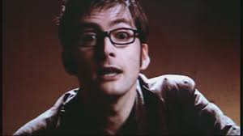

The Bootstrap Paradox
The Bootstrap Paradox is also know as an Ontolongical Paradox, in reference to ontology, a branch of metaphysics dealing with the study of being and existence
The Bootstrap Paradox is a Time Travel Paradox, in which the informations or objects can existis without been created. After a object - or information - be send back in time, it, recieved in the present, becames it self object or information that will be initialy taken back in time.

"People assume that time is a strict progression of cause to effect,
but actually, fom a nonlinear, non-subjective viewpoint, it's mora
like a big ball of wibbly-wobbly, timey-wimey...stuff" - 10th Doctor, Season 3 Episode 04 - Blink